L29 - Range-Doppler and MTI#
Range-Doppler and MTI
A burst of chirps measures each target’s radial velocity, and a pulse canceller removes the returns that do not move.
Lesson 29 · Antennas, Phased Arrays, and Radar Systems · Dr. Neil Rogers
Printing
To print the lab’s slides, switch to present mode and print: one slide a sheet, with room for notes. Print from read mode for the whole lesson and lab.
Learning Objectives
- I can process FMCW radar data to produce range, range-waterfall, and range-Doppler results.
- I can apply moving target indication (MTI) processing to distinguish moving targets from clutter.
This page is a lesson and then its lab. You read the lesson before the lab period and fill in Part 1 of the packet from it; the lab, lower on the page, is what we do in class.
Lesson 26 defined the Doppler shift and the velocity resolution of a burst of pulses, Lesson 27 showed that adding the chirps of a burst coherently is what makes a weak target detectable, and Lesson 28 turned one chirp into a range profile. This lesson puts the three together. We send a burst of chirps, arrange the samples as a matrix, and take a second FFT across the chirps, which gives the range-Doppler map: every target at its range and its radial velocity at once. Then we remove the returns that do not move, the walls, the table, and the kit’s own leakage, with moving target indication (MTI).
Every example on this page uses one teaching burst: a 10.0 GHz carrier (\(\lambda\) = 3.0 cm), chirps of 400 MHz in 200 µs sampled at 4 MSPS, and \(M\) = 128 chirps, one every \(T_\text{PRI}\) = 0.4 ms. The Phaser app does not send this burst. Your kit runs the app’s Range + Velocity preset, whose numbers the packet gives you, so every method here carries over and none of its numbers is a Part 1 answer.
From One Chirp to a Burst
In Lesson 28 one chirp gave one range profile. The echo, compared with the chirp still going out, is a tone whose frequency is proportional to range, and the range FFT sorts the echoes into range cells. The teaching burst sweeps 400 MHz in 200 µs, so the beat rises by \(2B/(cT)\) = 13.3 kHz for every meter of range, and the range cells of \(\Delta R = c/2B\) = 0.375 m are \(1/T\) = 5.0 kHz apart.
A moving target also shifts the echo by its Doppler frequency, \(f_D = 2v/\lambda\), which is 66.7 Hz for every meter per second at the 3.0 cm wavelength of a 10.0 GHz carrier. Within a single chirp that shift is invisible. A hand moving at 0.6 m/s shifts the beat by 40 Hz, under a hundredth of one range cell, and moves only 0.12 mm while the chirp lasts. By the rule of Lesson 26, an observation 200 µs long resolves frequencies 5.0 kHz apart, which is 75 m/s of velocity.
To measure velocity we have to watch the target for longer, and an FMCW radar does it by repeating the chirp. The teaching burst sends \(M\) = 128 chirps at a pulse repetition interval (PRI) of 0.4 ms, so it watches every range cell for 51.2 ms. The rest of the lesson is how the radar turns those 128 range profiles into a velocity, following ADI’s Range Doppler Radar Processing lab.
Chirp Synchronization
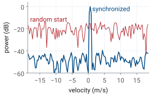
The range FFT of Lesson 28 needs only the frequency of the beat, so it does not care when the chirp started. The velocity measurement does. It compares the phase of the beat in one chirp with its phase in the next, and a moving target changes that phase by only a small, steady amount from chirp to chirp. A hand closing at 0.6 m/s moves 0.24 mm in one PRI, which shortens the round trip by 0.48 mm, a sixty-third of a wavelength, and advances the phase by 5.8°.
The beat phase also depends on when the samples start. A hand at 1.5 m on the teaching burst has a beat of 123 kHz, the teaching kit’s 0 m frequency of 103 kHz plus 13.3 kHz per meter, so starting the samples 1 µs late changes the phase by \(360° \times 0.123 = 44°\). If the start time wanders by a microsecond from chirp to chirp, the error is larger than the signal we are trying to measure.
By default the board’s receiver simply fills a buffer with samples, with no relation between the start of the buffer and the start of any chirp. ADI’s Synchronizing Radar Chirps lab describes how the PHASER fixes this: a timing engine in the radio starts the capture and then fires each chirp at a programmed delay after it, one every PRI, so every chirp’s samples begin at the same point of its ramp. The capture format records that PRI as PRI, and every velocity on this page depends on it being exact.
The figure shows the difference in the hand’s range cell. With the chirps synchronized, the Doppler FFT collects the hand into one sharp peak at +0.6 m/s. With each chirp starting at a random time within its PRI, the phase from chirp to chirp is random, and the same energy spreads evenly across every velocity: the hand is still there in range, but the map no longer shows its velocity, and its peak sits about 21 dB lower, close to the noise. That 21 dB is \(10\log_{10}128\), the coherent gain of Lesson 27 that the random phases throw away.
Fast Time and Slow Time
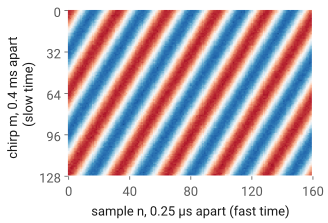
We stack the chirps of a burst as the rows of a matrix. Along a row the samples are \(1/f_s\) apart, 0.25 µs at 4 MSPS, and a row covers the ramp in \(f_s T\) samples, 800 for the teaching burst. That direction is fast time. Down a column the samples are one PRI apart, the same instant of each chirp; that direction is slow time. ADI draws the matrix the other way, chirps as columns; the capture format of the L28–L31 Labs stores it as the iq array, one row per chirp, n_chirps × n_samples, so the code on this page follows that layout.
The figure is the real part of that matrix for a single hand at 1.5 m, closing at 0.6 m/s, for the first 128 chirps and 160 samples. Across a row the beat oscillates at 123 kHz, one cycle every 33 samples; that frequency sets the range. Down a column the same sample oscillates once every 62 chirps, because the phase advances 5.8° a chirp; that rate measures the velocity. The stripes are diagonal because both are happening at once. A stationary target would draw vertical stripes, the same in every row.
The Phase From Chirp to Chirp
We take the range FFT of every row. The target now sits in the same range cell of every chirp, and that cell holds a complex number whose phase is the phase of the echo, \(-4\pi R_m/\lambda\), set by the round trip \(2R_m\) in wavelengths. Between chirps the target moves. With a closing speed \(v\), the range at chirp \(m\) is \(R_m = R_0 - v\ m\ T_\text{PRI}\), so
The first term is a constant. The second grows linearly with \(m\), which is a tone in slow time at
the Doppler shift of Lesson 26, with the same sign: a closing target has a positive frequency, and an opening one a negative frequency. The phase advances \(360° f_D T_\text{PRI}\) a chirp. For the teaching burst’s hand closing at 0.6 m/s,
and a hand opening at 0.9 m/s gives −60 Hz and −8.6°. The left of the figure draws the hand’s phasor in its range cell stepping 5.8° a chirp; the right is the aliasing of the next frame.
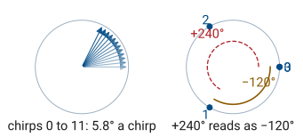
Two effects that the chain leaves out are small for this burst. The Doppler shift also moves the beat in fast time, but at the ±18.75 m/s limit of the next frames it is 1.25 kHz against 13.3 kHz per meter, a range error of 0.09 m, a quarter of a range cell. And the target moves during the burst: at 0.6 m/s it covers \(v\ M\ T_\text{PRI}\) = 3.1 cm in 51.2 ms, far less than one 0.375 m cell, which is the dwell limit of Lesson 27. A much faster target moves across several cells during the burst and smears in range, as the Range-Doppler Explorer shows.
The Range-Doppler Map
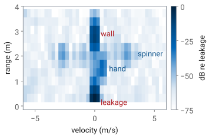
The second FFT, down each column of the range-transformed matrix, finds the slow-time tone in every range cell. The result is the range-Doppler map: range on one axis, radial velocity on the other, and the power of each cell. Each FFT is the coherent integration of Lesson 27, so a target’s energy from all 800 × 128 samples collects into one cell.
The figure is a map of the teaching burst for a scene like the one in the L29 Lab. The kit’s own transmit leakage appears at 0 m and a wall at 2.9 m; neither moves, so both sit in the 0 m/s column, and they are the strongest returns on the map. A hand at 1.5 m closing at 0.6 m/s sits at +0.6 m/s. A fidget spinner at 2.1 m spreads into a band of velocities at one range, which A Spinner’s Micro-Doppler explains.
Where a target lands in range depends on where the range cells sit. The range FFT’s bins are \(1/T\) apart in beat frequency, and the 0 m frequency \(f_0\) that the L28 calibration measures need not fall on a bin, so cell \(k\) sits at
With the teaching kit’s 0 m frequency of 103 kHz the first cell at or beyond 0 m is the one at 105 kHz, 0.15 m out, and the cells run 0.15, 0.525, 0.90, … m. The leakage, at exactly 0 m, lands in that first cell, and the wall at 2.9 m lands in the cell at 2.78 m: within half a cell of its tape range, which is as close as the map can say.
Both FFTs use a Hann window, as the range FFT did in Lesson 28. The window matters more in Doppler than in range: the wall is 18 dB stronger than the hand here, and the first sidelobe of an unwindowed FFT is only 13 dB down, so without the window the wall’s Doppler sidelobes would spread across every velocity at the wall’s range and bury any slow target there, and the leakage’s would do the same in the first cell. The Hann window puts the first sidelobe 31 dB down, and it makes every target’s spot about one and a half cells wide 3 dB down, so the width of a spot on the screen is a direct reading of the cell.
The provided radar_lab.py does this, and the L29 notebook runs it on your captures. The range FFT on each row is the one from L28.
def range_doppler(cap, window="hann"):
"""Range-Doppler map: (rd_db, range_m, vel_mps), rd_db indexed [range, velocity]."""
rp = range_fft(cap, window) # n_chirps x n_bins, from L28
r = range_axis(cap)
keep = r >= 0
rp = rp[:, keep]
m = rp.shape[0]
wd = _window(window, m)
rd = np.fft.fftshift(np.fft.fft(rp * wd[:, None], axis=0), axes=0) / wd.sum()
lam = C / cap["fc"]
vel = np.fft.fftshift(np.fft.fftfreq(m, cap["PRI"])) * lam / 2
rd_db = 20 * np.log10(np.abs(rd.T) + 1e-12)
return rd_db, r[keep], vel
The velocity axis converts each Doppler bin to velocity with \(v = f_D\lambda/2\). The module follows the conventions of this page: positive velocity is closing, toward the kit, as in Lesson 26; the map is indexed [range, velocity], which is the order Lesson 30’s cfar_2d expects; only ranges at or beyond 0 m are kept; and range_doppler divides each FFT by the sum of its window, so a tone of amplitude 1 reads 0 dBFS whatever the window. A hand moving toward the kit therefore lands at positive velocity, and checking that on your own map is the first test of the velocity axis.
The Velocity Axis
The Doppler FFT of \(M\) slow-time samples, \(T_\text{PRI}\) apart, has bins \(1/(M\ T_\text{PRI})\) apart in frequency, which is the rule of Lesson 26: watching for \(M\ T_\text{PRI}\) resolves its reciprocal. Converting with \(v = f_D\lambda/2\) gives the velocity resolution
The slow-time samples come once per PRI, so the Doppler FFT sees the tone sampled at the PRF, 2.5 kHz, and it can only tell apart frequencies within ±1.25 kHz. That is the maximum unambiguous velocity,
A faster target aliases. At +25 m/s the phase advances 240° a chirp, which the FFT reads the same as −120°, as the right of the phasor figure shows, so the map reports \(25 - 37.5 = -12.5\) m/s. These are the same two formulas ADI’s Range_Doppler_Processing.py prints as its velocity resolution and maximum velocity.
Choosing the Burst
Teaching burst |
\(\Delta v\) (m/s) |
\(v_\text{max}\) (m/s) |
\(\Delta R\) (m) |
|---|---|---|---|
128 chirps, 400 MHz |
0.29 |
±18.75 |
0.375 |
32 chirps |
1.17 |
±18.75 |
0.375 |
160 MHz chirp |
0.29 |
±18.75 |
0.94 |
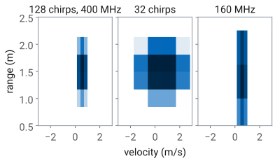
Each parameter of the burst controls one axis of the map. The number of chirps \(M\) sets the velocity resolution and nothing else: 32 chirps watch for 12.8 ms and resolve 1.17 m/s, and 256 would resolve 0.146 m/s. The chirp bandwidth sets the range resolution and nothing else: dropping from 400 MHz to 160 MHz widens every target from 0.375 m to 0.94 m in range. The PRI sets the velocity limit, and a longer chirp needs a longer PRI to fit in, which forces a slower PRF and a smaller \(v_\text{max}\). A shorter burst can be made from a long one after the fact: keep only its first \(M\) chirps, which is what the L29 notebook does.
More chirps also have two drawbacks, and one gain. The gain is the integration gain of Lesson 27, \(10\log_{10}M\). Because range_doppler divides each FFT by the sum of its window, a target’s level on the map stays where it is whatever \(M\) is, and the noise floor moves instead: keeping 48 of the teaching burst’s 128 chirps raises the floor by \(10\log_{10}(128/48)\) = 4.3 dB. The drawbacks: a long burst refreshes the map less often, and lets a fast target cross range cells while the burst lasts.
Range-Doppler Explorer
The widget computes a range-Doppler map from the teaching burst: leakage at 0 m, a wall at 3.0 m, and a hand at 1.5 m whose closing speed you set. Beside the map is the power gain of the MTI filter against velocity, with the hand’s speed marked, which Canceller Response and Blind Speeds derives. Start with the hand at +0.6 m/s and change the number of chirps: the hand’s spot narrows in velocity as \(M\) grows and the noise floor drops. Move the hand past +18.75 m/s and watch it reappear at negative velocity, and at more than a few meters per second watch it smear in range as it crosses cells during the burst. Turn chirp sync off: the map keeps every target’s range and no longer shows its velocity. Then step through the MTI settings at a few speeds.
A Spinner’s Micro-Doppler
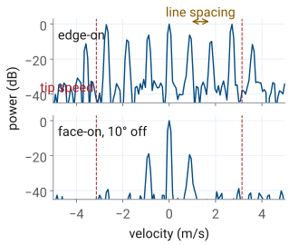
A fidget spinner held edge-on, its plane of rotation along the line of sight, moves each of its arms toward the kit for half a turn and away for the other half. An arm on a circle of radius \(a\) turning at \(f_\text{rev}\) revolutions a second has a tip speed and a radial velocity of
so over a burst its echo covers every velocity between \(-v_\text{tip}\) and \(+v_\text{tip}\). The arm spends the longest near the extremes, where its radial velocity turns around, so the band is brightest toward its edges. The spinner in the figures has arms 2.5 cm from the hub at 20 revolutions a second, so \(v_\text{tip} = 2\pi(0.025)(20) = 3.14\) m/s, a band of ±209 Hz at 10.0 GHz. The hub, and the hand that holds it, do not move, and sit at 0 m/s.
The band is not smooth. Three identical arms make a pattern that repeats every third of a turn, and a signal that repeats every \(1/(3f_\text{rev})\) seconds has its spectrum in lines \(3f_\text{rev}\) apart: 60 Hz here, or \(\lambda(60\ \text{Hz})/2 = 0.90\) m/s, about three of the teaching burst’s 0.29 m/s cells, so the map resolves them. The figure is a longer, 512-chirp record, whose finer cells show the lines cleanly. The line heights rise and fall across the band, so some lines are weak; the spacing is the same everywhere, and the outermost strong line sits a little inside the tip speed. The spacing gives the spin rate without a ruler, and the band’s edge gives it with one:
Held face-on, the spinner moves its arms across the beam, with no radial velocity. A hand never holds it exactly face-on: held \(\theta\) off face-on, only \(\sin\theta\) of the swing reaches the line of sight. For this spinner held 10° off, that is \(3.14 \sin 10° = 0.55\) m/s, less than one 0.90 m/s line spacing, and the lines stay \(3f_\text{rev}\) apart whatever the swing, so the band shrinks to the center line and the first line either side, at ±0.90 m/s: its edge sits on a line, not at the swing.
This is micro-Doppler, the Doppler of the parts of a target that move relative to its body, and Lesson 31 uses it to tell one kind of target from another.
Short Windows: The Spectrogram
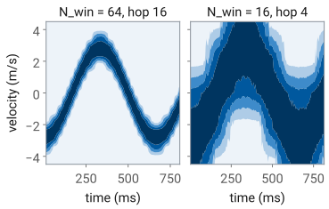
A spinner slows down, a hand speeds up and stops, and one map averages all of that over the whole burst. A spectrogram cuts one range cell’s slow-time signal into short windows of \(N_\text{win}\) chirps, each starting a hop of \(N_\text{hop}\) chirps after the last, and takes the FFT of each. A window of \(N_\text{win}\) chirps is a short burst, so its Doppler cell is the velocity resolution with \(M = N_\text{win}\), and its columns are \(N_\text{hop}\ T_\text{PRI}\) apart in time:
The figure is a hand waved on the teaching burst. A 64-chirp window with a hop of 16 gives 0.59 m/s cells and a column every 6.4 ms; a 16-chirp window with a hop of 4 gives 2.34 m/s cells and a column every 1.6 ms. Shortening the window, with the hop a fixed fraction of it, widens the cell and shortens the time between columns by the same factor. The band’s edge still reaches the target’s top speed, to within a cell, at any window that resolves it. The provided radar_lab.spectrogram subtracts the cell’s mean first, which removes its 0 m/s component, the hub and the hand that holds a spinner, the way the cancellers below do; Lesson 31 builds its classifier on it.
Clutter at Zero Velocity
Everything that does not move returns the same echo on every chirp: the leakage from the transmit antenna straight into the receiver, the walls, the table, the stand the kit sits on. Radar engineers call these returns clutter. On the map they all sit at 0 m/s, and in a lab room they are by far the strongest returns. In the scene of the map figure the leakage is 30 dB above the hand and the wall is 18 dB above it.
The Doppler FFT already separates clutter from a moving target, but removing the clutter still helps, for three reasons. A strong return has sidelobes in Doppler even with a window, and anything that changes the clutter slightly from chirp to chirp, a vibrating stand, a fan’s air moving a cable, the small timing error that chirp sync cannot remove, spreads its energy across nearby velocities, where a slow target competes with it. The CFAR detector of Lesson 30 estimates the noise from the cells around each test cell, and a clutter ridge in those cells raises the threshold for the targets beside it. And a spectrogram has far less Doppler resolution than the full burst, so a strong clutter line there covers a wide band. Removing clutter before the Doppler FFT addresses all three, and that is moving target indication (MTI).
Pulse Cancellers
The simplest MTI filter subtracts each chirp from the one before it, sample by sample. ADI’s MTI Radar Processing lab calls it the two-pulse canceller. A return that is identical in two consecutive chirps, which is what a stationary return is when the chirps are synchronized, subtracts to zero. A moving target’s phase has advanced between the chirps, so the difference is not zero, and the target survives. Applying the same subtraction to the output a second time gives the three-pulse canceller:
Its notch at 0 m/s is deeper and wider; Canceller Response and Blind Speeds gives both gains.
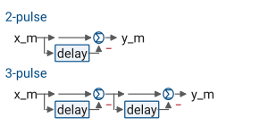
Both filters work across chirps, so we can apply them to the raw beat samples before the range FFT, as ADI’s script does, or to the range-transformed rows after it; the FFT is linear, so the two give the same map. Each output has one or two fewer chirps than the input. The provided radar_lab.py does this too, and the L29 notebook runs it on your captures. It returns a capture, so range_doppler(mti(cap, "2pulse")) works without any other change:
def mti(cap, kind="2pulse"):
"""A pulse canceller across chirps; returns a capture, one or two chirps shorter."""
def cancel(x): # chirps on the second-to-last axis
if kind == "2pulse":
return x[..., 1:, :] - x[..., :-1, :]
if kind == "3pulse":
return x[..., 2:, :] - 2 * x[..., 1:-1, :] + x[..., :-2, :]
if kind == "none":
return x
raise ValueError(f"kind must be '2pulse', '3pulse', or 'none', not {kind!r}")
out = {**cap, "iq": cancel(cap["iq"])}
if "iq_ch" in cap:
out["iq_ch"] = cancel(cap["iq_ch"])
return out
Canceller Response and Blind Speeds
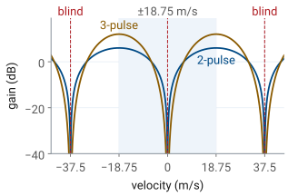
To find what the canceller does to a target of any speed, feed it the slow-time tone of the phase frame, \(x_m = A\ e^{j2\pi f_D m T_\text{PRI}}\). The two-pulse output is
so the tone comes out with its power multiplied by
The three-pulse canceller is two of these in a row, so its power gain is the square,
which in decibels is twice the two-pulse gain. Both gains are zero at \(f_D = 0\), the clutter, and both are largest at the edge of the unambiguous window, \(f_D = \pm 1/(2T_\text{PRI})\), where the power gain is 4 for the two-pulse canceller and 16 for the three-pulse.
On the teaching burst, a target at 16 m/s has \(f_D\) = 1067 Hz and \(f_D T_\text{PRI}\) = 0.427, so the two-pulse canceller multiplies its power by \(4\sin^2(\pi \times 0.427) = 3.79\), +5.8 dB, and the three-pulse by +11.6 dB.
The gain is also zero wherever \(f_D T_\text{PRI}\) is a whole number \(k\): the target’s phase then advances a whole number of turns from one chirp to the next, and the canceller subtracts it away exactly as it does a stationary return. Those are the blind speeds,
every 37.5 m/s for the teaching burst. The first blind speed is twice \(v_\text{max}\), which follows from the aliasing in The Velocity Axis: a target at 37.5 m/s aliases to 0 m/s on the map, and the canceller removes it with the clutter. Nothing in the L29 Lab moves that fast, but a car or a drone can, and a radar that must see them changes its PRI from burst to burst so that a target blind at one PRI is visible at the next.
What MTI Removes
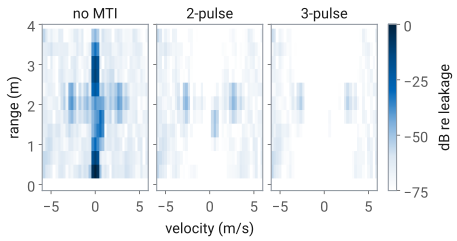
The figure runs the scene of the map figure through each canceller and draws all three maps on one scale. The leakage and the wall drop into the floor under either canceller. The figure’s simulation adds a small chirp-to-chirp timing jitter, and its residue is what remains at 0 m/s; the course’s recorded bursts add none, and a kit’s own timing adds more. Chirp sync sets how deep the cancellation can go.
The cancellers also weaken moving targets, and they weaken the slow ones most. The teaching burst’s hand at 0.6 m/s has \(f_D T_\text{PRI} = 40 \times 0.4 \times 10^{-3} = 0.016\), deep in the notch: the two-pulse canceller multiplies its power by \(4\sin^2(\pi \times 0.016) = 0.010\), −20.0 dB, and the three-pulse by −39.9 dB, which puts the hand below the noise in the figure. The noise goes through the same filter. Each output adds independent noise samples, so the canceller multiplies the total noise power by the sum of the squared taps: \(1^2 + 1^2 = 2\) for the two-pulse canceller and \(1^2 + 2^2 + 1^2 = 6\) for the three-pulse. Against that total the hand’s SNR falls by 23.0 dB and 47.7 dB, and on this burst every target slower than about 9.4 m/s (two-pulse) or 10.7 m/s (three-pulse) loses SNR; that is the loss a detector would see if it looked at the canceled chirps without a Doppler FFT. The map does not compare the hand with the total. The Doppler FFT gives each velocity its own cell, and the noise in the hand’s cell passed through the same notch as the hand, so it drops by the same amount, and the hand stands as high above its own floor as it did without MTI. The floor rises only toward \(\pm v_\text{max}\), by the canceller’s gain there, so the canceller shapes the floor the way it shapes the targets, and the L29 notebook measures both. MTI improves the ratio of a target to the clutter, not to the noise, so it helps where clutter, not noise, limits what the radar can see.
The same gain says what the cancellers do to a hand that is almost still. A hand held still has a tremor: one 1 mm either way at 1 Hz moves at most \(2\pi(1\ \text{mm})(1\ \text{Hz}) = 6.3\) mm/s and swings the echo’s phase by \(4\pi(1\ \text{mm})/\lambda = 24°\) either way. At 6.3 mm/s, \(f_D\) is 0.42 Hz, and the two-pulse canceller’s gain there is −59.6 dB; the three-pulse gain is twice that in dB. A hand moved across the beam at range \(R_0\), a distance \(x = A\sin(2\pi f t)\) to the side, has a range and a radial velocity of
so its radial speed peaks at \(\pi A^2 f/R_0\). For 0.15 m either way at 1 Hz, 1.5 m out, that is 0.047 m/s, a Doppler of 3.1 Hz, and a two-pulse gain of −42.1 dB. Both come out far deeper than the hand pushed at 0.6 m/s. The radial speed of each passes through zero and spends most of its time below its peak, so a gain worked at the peak speed is the least the canceller removes. The spinner shows the notch too: the arms moving fastest along the line of sight survive, and the canceller removes the parts of its spectrum near 0 m/s with the clutter. For a hovering drone, ADI’s MTI lab points out, the body disappears but the blades’ micro-Doppler remains, which is what Lesson 31 classifies.
With strong clutter and fast targets the three-pulse canceller gives the cleanest map; for a slow hand the two-pulse canceller, or none, keeps more of the target.
Summary
Symbol / idea |
What it is |
Teaching burst |
|---|---|---|
Burst |
\(M\) chirps, one every \(T_\text{PRI}\) |
128 chirps of 200 µs, 0.4 ms PRI, 51.2 ms |
Chirp sync |
every chirp starts a fixed delay after the capture |
1 µs of error shifts the phase 44° at 123 kHz |
Fast time |
samples within one chirp, a row of |
800 samples, 0.25 µs apart |
Slow time |
the same sample across chirps, a column |
128 samples, 0.4 ms apart |
Slow-time tone |
\(f_D = 2v/\lambda\) in every range cell |
40 Hz, 5.8° a chirp, at 0.6 m/s |
Range-Doppler map |
range FFT on rows, Doppler FFT on columns |
0.375 m by 0.29 m/s cells |
Range cells |
\(R_k = (k/T - f_0)/(2B/cT)\) |
0.15 m first, at \(f_0\) = 103 kHz |
Velocity resolution |
\(\Delta v = \lambda/(2M\ T_\text{PRI})\) |
0.29 m/s; 1.17 m/s at 32 chirps |
Maximum velocity |
\(v_\text{max} = \pm\lambda/(4T_\text{PRI})\) |
±18.75 m/s; +25 m/s shows at −12.5 m/s |
Floor and \(M\) |
the floor moves by \(10\log_{10}\) of the chirp ratio |
+4.3 dB keeping 48 of 128 |
2-pulse canceller |
\(y_m = x_m - x_{m-1}\), gain \(4\sin^2(\pi f_D T_\text{PRI})\) |
−20.0 dB at 0.6 m/s, +5.8 dB at 16 m/s |
3-pulse canceller |
\(y_m = x_m - 2x_{m-1} + x_{m-2}\), gain squared |
−39.9 dB at 0.6 m/s, +11.6 dB at 16 m/s |
Noise gain |
sum of the squared taps; the floor takes the canceller’s shape |
2 and 6 in power |
Spinner, edge-on |
a band to \(\pm v_\text{tip} = \pm 2\pi a f_\text{rev}\), lines \(3f_\text{rev}\) apart |
±3.14 m/s and 0.90 m/s at 2.5 cm, 20 rev/s |
Spinner, face-on |
\(\sin\theta\) of the swing; the edge sits on a line |
the first line, ±0.90 m/s, at 10° off |
Nearly still |
gain at the peak radial speed |
tremor: −59.6 dB; across the beam: \(\pi A^2 f/R_0\), −42.1 dB |
Spectrogram |
cell \(\lambda/(2N_\text{win}T_\text{PRI})\), columns \(N_\text{hop}T_\text{PRI}\) apart |
0.59 m/s and 6.4 ms at 64 and 16 |
Blind speeds |
\(v_\text{blind} = k\lambda/(2T_\text{PRI})\) |
every 37.5 m/s |
Pre-Lab
Part 1 of the L29 Lab packet is the shaded Predicted cells of its tables, worked at the Range + Velocity preset’s numbers, which the packet gives. The lesson above works each method on the teaching burst:
Packet table |
Predict |
Method |
Checked in |
|---|---|---|---|
A, the static scene |
where the leakage and the wall land |
Step 4 |
|
B, a hand |
the velocity and Doppler of a push and a pull |
Steps 5 and 6 |
|
C, a spinner |
the band’s edges, the line spacing, face-on |
Steps 7 to 9 |
|
D, chirp count and bandwidth |
\(\Delta v\), the floor, and \(\Delta R\) |
Steps 14 and 15 |
|
E, MTI |
each canceller’s gain on each return |
Steps 10 to 12, 16 |
|
F, the spectrogram |
its cell, its column spacing, its band |
Step 17 |
Show your work for one row of each table on your own paper and attach it.
L29 Lab: Range-Doppler and MTI
Read a hand and a spinner on the range-Doppler map, then cancel the returns that do not move.
L29 Lab · Antennas, Phased Arrays, and Radar Systems · Dr. Neil Rogers
Learning Objectives
- I can process FMCW radar data to produce range, range-waterfall, and range-Doppler results.
- I can apply moving target indication (MTI) processing to distinguish moving targets from clutter.
The Big Picture
Read velocity, then cancel what does not move.
Steps |
Set |
Read |
Table |
|---|---|---|---|
1–4 |
clear scene |
leakage, wall |
A |
5–9 |
hand, spinner |
velocity, band |
B, C |
10–13 |
MTI |
levels |
E |
14–17 |
notebook |
cells, spectrogram |
D–F |
The Phaser app’s Range + Velocity preset sends one burst and draws its range-Doppler map. You read the static scene first, then a hand pushed and pulled along the line of sight, then a fidget spinner edge-on and face-on. You switch the app’s MTI between off, 2-pulse, and 3-pulse with the wall, your hand, and your still hand in the beam. After class the notebook runs the same chirp count, canceller, and spectrogram readings on the bursts you saved. Every reading fills a white Measured cell in the packet, beside the shaded Predicted cell you filled in from the lesson.
Predict First
Before you measure, predict each picture, then check yourself. Choose a target, an MTI setting, and a chirp count, and decide before you press Show map: where on the map the target lands, at what sign of velocity, how wide in velocity, and what the canceller does to it. Then show it. Any change hides the map again, so each guess comes first. The widget runs the lesson’s teaching burst, not the kit’s preset, so its numbers are not your Part 1 values; its pictures are the ones your kit should draw.
Bring Up the Kit
Tx on OUT2; Range + Velocity, MTI off, the Range-Doppler view.
Calibrate 0 m, then read the leakage and the wall.
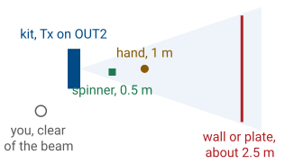
You need a wall or the L28 plate standing on its own about 2.5 m in front of the kit, a tape measure, a ruler, and a fidget spinner. The burst sees everything that moves in the beam, and your body is the largest moving return in the room, so step behind the kit or well to one side for every static and MTI reading; otherwise your breathing and sway appear as a smear of slow velocities at your range.
Connect. With the kit powered off, connect the transmit antenna to OUT2, then power it and wait for the Pi to boot. On your laptop open the radar app at
http://phaser-NN.local:8081, with your kit’s number for NN, and choose the FMCW tab.Calibrate 0 m. In the FMCW section, set Preset to Range + Velocity. Press Calibrate…, hold the plate against the array, wait for the strongest return to settle, and press Calibrate: the app writes your kit’s 0 m frequency into 0 m Beat (kHz). Or type your L28 Table A value there. The app measures every range on the map from this frequency, so a wrong value moves every return by the same distance.
Start the map. Leave MTI off, open the Range-Doppler view, and press Start. Velocity runs across, positive closing, and range runs up. Hover over any cell to read its velocity, range, and level in dB. Peak Range, Peak Velocity, and Peak Magnitude below the plot read the strongest cell that moves: they skip the cells within 0.3 m/s of zero, so read a static return by hovering. The colors run from each frame’s own peak down Color Span (dB), so read levels by hovering, never by color. The app’s levels sit about 18 dB below the notebook’s dBFS on the same burst, because the app windows each FFT with a Blackman window and scales it differently from
range_doppler; compare a change in dB between the two, never a level.Read the static scene. Step clear of the beam. Hover over the leakage, which sits in the first range cell at 0 m/s, and over the wall’s spot at 0 m/s, and record each range, velocity, and level, and the wall’s tape range. Compare each with your Table A prediction; a spot within half a range cell of it agrees. Press Save Capture: it downloads the current burst as
phaser_range_doppler_<date>-<time>.npz, 256 raw chirps whatever the MTI setting, so the notebook applies the canceller itself. Rename it for what it holds and move it into your Module 4 folder.
A Hand
A flat hand about 1 m out, at array height.
Push it in, then pull it out, along the line of sight.
Read Peak Range and Peak Velocity; save a push.
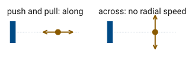
Moving the hand across the beam gives it almost no radial velocity, so keep it on the line of sight and at a steady pace.
Push. Stand to one side of the kit and push a flat hand straight toward the array from about 1 m, about half a meter in half a second. Record its range and velocity from Peak Range and Peak Velocity, and convert the velocity to its Doppler frequency, \(f_D = 2v/\lambda\). Repeat a few times and record a typical push. Your push will not be exactly 1 m/s, so compare its sign with Table B, and check that your Doppler equals \(2v/\lambda\) at the velocity you read. Press Save Capture during a push, with the wall still in view: the burst lasts 128 ms, so start the push before you press it and keep moving until it saves.
Pull. Pull the hand straight away from the array and record the same.
A Fidget Spinner
Measure the arm radius.
Edge-on, about 0.5 m out: read the band and its lines.
Face-on: read the band again.
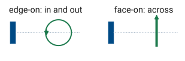
Measure the arm. Measure the spinner’s arm radius \(a\), from the center of the hub to the center of a weight.
Edge-on. Spin it hard and hold it by the hub, edge-on to the kit, its plane of rotation pointed at the array, about 0.5 m out at array height. A spinner with metal weights in its arms reflects more than an all-plastic one. Hover along the band’s row to read its range, the velocities of its two edges, and, where the lines within it are visible, their spacing; then work out the spin rate from the edge and from the lines. A real spinner slows as it runs, so read both within a few seconds of each other, and press Save Capture while it spins fast.
Face-on. Turn the spinner face-on to the kit and record where the band’s edges are now.
Cancel the Clutter
MTI off, then 2-pulse, then 3-pulse, at each return.
The wall with the beam clear, then a pushing hand.
A hand held still, then one moved across the beam.
Read every level here by hovering, at the return’s range: the wall at 0 m/s, a hand at its spot. Record the level with MTI off, and with each canceller the change from it in dB. After MTI the map rescales to the strongest thing left, so a weakened return can still look bright.
The wall. Step clear of the beam with MTI off and read the wall’s level. Turn MTI on with MTI Mode at 2-pulse, then 3-pulse, and read the same cell each time. If the return drops to the noise floor, record it as gone.
A pushing hand. Push your hand as in Step 5 and read its spot the same three ways.
Still, and across. Hold your hand still in the beam about 0.8 m out and read it the same three ways; then move it side to side across the beam at the same range, about 0.2 m either way, once a second, and do the same. Compare all four rows with your Table E predictions.
Restore. Turn MTI off.
Run the Notebook
Run it on your push burst.
Task (a): shorten the burst to 128, then 64 chirps.
Task (b): enter your predicted gain, then run 2-pulse and 3-pulse.
Task (c): the spinner’s spectrogram, 64- then 32-chirp windows.
Do this part after class, from your saved bursts, with the notebook set up as the Notebook Setup frame describes. Each task’s markdown cell states what to check, and each prints the numbers its step records. The notebook’s levels are dBFS, about 18 dB above the app’s hover levels on the same burst, because range_doppler uses a Hann window and divides each FFT by the window’s sum; compare changes between the two, never levels. The app’s presets all send 256 chirps of 500 MHz, so the 128- and 64-chirp rows are the first \(M\) chirps of your own burst, and the 200 MHz row is a recorded burst for everyone.
The chirp count. Open
L29_range_doppler.ipynb, setCAPTUREin the first code cell to your push burst from Step 5, and run the cells from the top. In task (a), run the chirp-count cell withM = 256, then change that one line toM = 128and toM = 64. Recorddvand the hand’s width 3 dB down for each, the floor atM = 256in dBFS, and the floor’s change from it at 128 and 64.The bandwidth. Set
CAPTUREtoL29_hand_closing_B200.npzand run the map cell again. Record the hand’s width in range, and setCAPTUREback to your own burst.The cancellers. In task (b), replace
H_DB = Nonewith the canceller’s predicted gain at the hand’s Doppler, in dB, and run the MTI cell withKIND = "2pulse"; then change it toKIND = "3pulse". Record the hand’s change beside yourH_DB, and the floor’s change near 14 m/s.The spectrogram. In task (c), set
SPINto your spinner burst and run its map cell, which prints the band’s lines; setR_SPINto the band’s range and run the spectrogram withN_WIN = 64, thenN_WIN = 32. Record the Doppler cell, the time between columns, and the band within 10 dB of its peak. Save the notebook with its edits and plots and upload the.ipynbwith the packet.
No Hardware?
Note
Every step works without a kit. Open the Phaser app’s simulator in a
browser,
livethisdream.github.io/phaser/radar:
the same radar app, with a Scene menu in its FMCW section and a pill that
reads Simulated. A Scene moves simulated targets live on the Range +
Velocity preset: hand waves a hand at 0.6 m, corners holds three corners
at 1, 2, and 3 m, and static holds a still target at 1 m with movers at 3.5
and 7 m. Load Recording plays one of the course’s recorded bursts through
the same views as if it were live, with the MTI switch working on it. Leave
0 m Beat (kHz) empty: a recording uses its own 0 m frequency, which the
Logs tab prints when it loads. The recordings are in the lab’s bundle,
L29_lab.zip, with the
notebook. They simulate the PHASER on the app’s preset, with a wall at
2.5 m; the simulation times the chirps perfectly, so the cancellers remove
the wall completely, which no kit does. Say in your packet which readings are
recorded rather than your own.
Steps 1 to 4 and 10:
L29_static.npzSteps 5, 11, 14, and 16:
L29_hand_closing.npz; Step 6:L29_hand_opening.npzSteps 7 to 9 and 17:
L29_spinner.npzandL29_spinner_faceon.npz; the arm radius is 3.0 cmStep 12:
L29_hand_still.npzandL29_hand_across.npzStep 15:
L29_hand_closing_B200.npz, the same for everyone
Notebook Setup
Download the lab’s bundle, L29_lab.zip, and unzip it into the Module 4 folder you set up in the L28 Lab’s Notebook Setup, with the same Python and packages. It holds L29_range_doppler.ipynb, a fresh radar_lab.py, the data README, and all eight recorded bursts, which the notebook opens by default, so it runs as shipped before you change anything. Move the bursts you saved with Save Capture into the same folder. Start Jupyter in the folder with jupyter lab and open L29_range_doppler.ipynb.
Your Part 2 Entries
This frame collects every box you filled in on this page. Your entries stay in this browser only, saved as you type. Download my packet writes them into Part 2 of the blank packet and saves the PDF; do Parts 1 and 3 on paper or in the PDF viewer, and upload one PDF to Gradescope with your notebook. If you have already typed Part 1 into the packet PDF, use Fill my own copy and choose that file instead: your Part 1 is kept, and Part 2 is added to it. Either way the result is locked, so finish any typing in the PDF first. Export entries saves a small backup file you can Import on another laptop or after clearing your browser. The boxes are optional: the blank packet is in the next frame, to fill on paper or in a PDF viewer instead.
Lab Packet
The L29 Lab packet is one submission, turned in complete before Lesson 30, with the notebook. It has three parts:
Part 1, Predict (before the lab period): the shaded Predicted cells of Tables A to F, at the Range + Velocity preset.
Part 2, Measure (your own kit, in class, and the notebook after): the white Measured cells of the same tables.
Part 3, Analyze (after the lab): three prompts about what you measured.
For Part 3
Part 3 asks you to compare your Table D readings at the three chirp counts with your predictions, to find your spinner’s spin rate every way Table C allows and say which you would report, and to compare what each canceller did to each return in Table E with your predictions. I grade each answer on a claim, your own numbers as evidence, the reasoning between them, and how large a difference your readings can resolve. For the final report, keep your bursts, your notebook, and your tables: the report asks you to explain, in your own words, how a burst of chirps becomes a velocity and what MTI does to a scene.
Looking Ahead
Lesson 30 decides which cells of this map hold targets, setting the threshold from the cells around each one, and the L30 Lab runs that detector on range-Doppler maps of this burst.